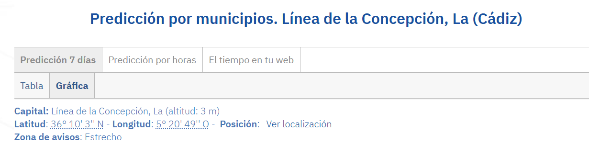
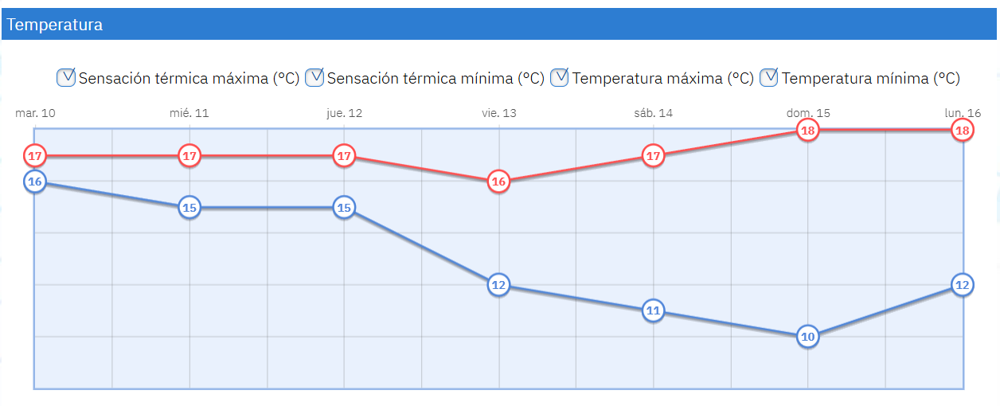

En la naturaleza nada permanece estable, todo cambia. El ser humano, animal dotado de inteligencia, ha intentado buscar explicaciones y definir reglas para esos cambios. Desde el principio de los tiempos ha sido así.
La duración de los días, el movimiento de las estrellas, los ciclos de la Luna, el paso de las estaciones. Medir el tiempo: años, meses, días, horas... Ha sido el fruto de la paciencia y de la inteligencia humana.
Observar, recopilar datos, buscar relaciones entre ellos. Y de esa forma adelantarse en el tiempo a los acontecimientos que van a suceder: eclipses, duración de las estaciones, horario de las mareas.
En el periodo de tiempo comprendido entre el 10 y el 16 de febrero de 2026, en la ciudad de La Línea de la Concepción, la temperatura más alta se registró los días 15 y 16 de febrero y la más baja el día 15 de ese mismo mes.
En la siguiente imagen de la AEMET podemos ver la predicción realizada el 10 de febrero para siete días. Efectivamente, el ser humano ha sido capaz de crear fórmulas que le permiten conocer con antelación la evolución de las temperaturas.


La imagen nos informa de la evolución de las temperaturas esos días. Con sólo fijarnos un poco podemos saber qué día se alcanzó la temperatura máxima o mínima.
¿Cómo se obtienen esos datos? ¿Llamando a un adivino, a una echadora de cartas? No, como hemos dicho, observando, buscando relaciones (en este caso, entre el tiempo y la temperatura), y tras mucho discurrir, encontrando una fórmula que se ajuste con precisión a la relación entre las variables.
Gráficas, tablas, fórmulas, distintas formas de expresar relaciones entre variables. El ingenio humano ha sido capaz de desarrollar con el paso de tiempo conceptos capaces de precisar con exactitud todo tipo de relaciones. El más importante de todos ellos, es el de función de dos variables. La forma más elegante que ha encontrado la curiosidad humana de expresar los cambios en la naturaleza.